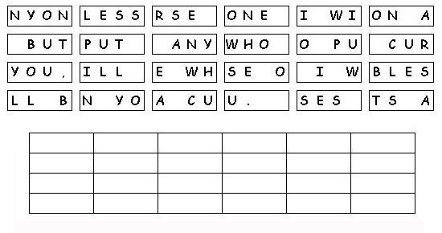

This week's lessons:n(Genesis
12:1-9, Psalm
33:1-12) or (Hosea
5:15-6:6, Psalm
50:7-15, Romans
4:13-25,
Matthew
9:9-13, 18-26
Elementary School Pew-work
Y O U R N B G C K N
|
Genesis 12:1-2 NRSV) Now the LORD said to Abram, "Go from your country and your kindred and your father's house to the land that I will show you. {2} I will make of you a great nation, and I will bless you, and make your name great, so that you will be a blessing |
Word List |
from http://www.efree.mb.ca/lectionarypuzzles free to distribute for free with this notice. Words are in a straight line left to right or top to bottom |
||
1.
What did Jesus say to
Matthew?
_____________________________________________________________
2.
What did Matthew do when Jesus spoke to
him?
_____________________________________________________________
3.
Where did Jesus
go?
_____________________________________________________________
Questions taken from Sunday School Lessons; http://www.sundayschoollessons.com/baplord.htm

Created
by Puzzlemaker
at DiscoverySchool.com
Next week: (Genesis
18:1-15, (21:1-7),
Psalm
116:1-2, 12-19)
or (Exodus
19:2-8a, Psalm
100), Romans
5:1-8, Matthew
9:35-10:8, (9-23)